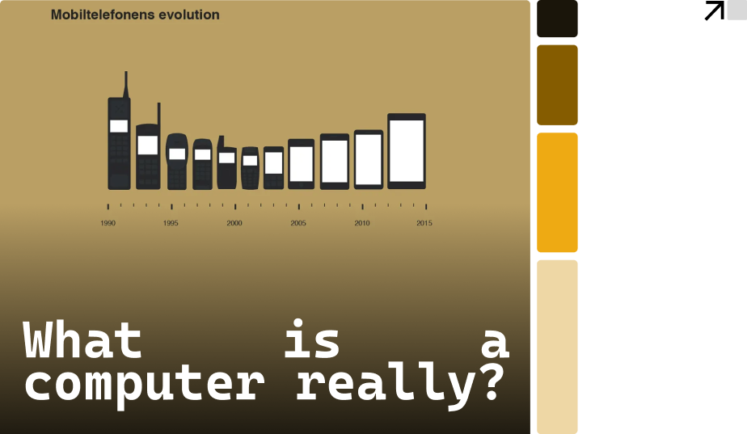
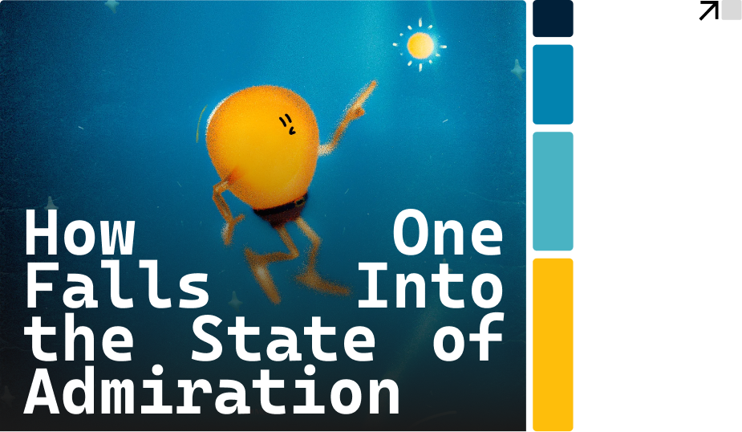
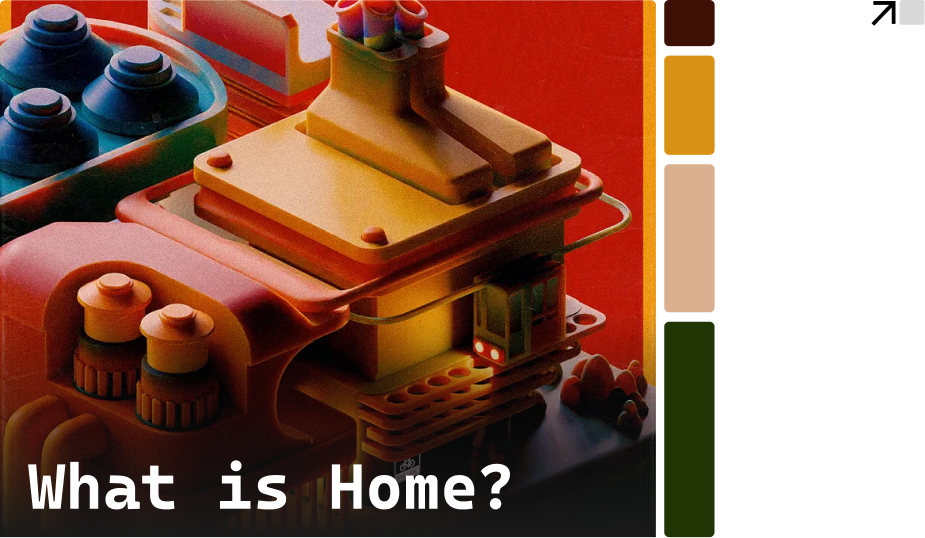
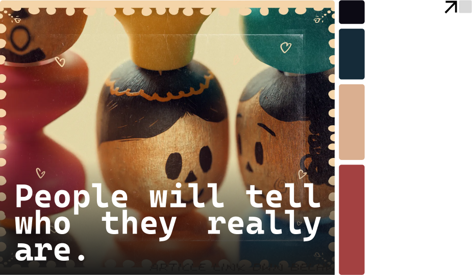

Writing is not just about expressing ideas and notions; it’s to make sense of the reality around you. --------> As UX designers, our words can influence how people interact with the world. By writing, we clarify our thoughts, communicate our vision, and ultimately, help people navigate the complexities of modern life.
UX RELATED STUFFS
3 min read · Jun 28, 2024
A phone could not be a computer, no? I just brought a RTX_1080P_4K_RGB_GAMING_GIGACHAD
of a laptop. I call it, my computer. Sounds wrong to call that a “computer” right?...
2 min read · Jun 26, 2024
Personas are not just a wall of text about a person...
Its not just about their
demographics Its not just about their behavior...
Its not just about their background...

4 min read
·
Mar 30, 2024
What is considered eye-opening? To which should I offer my undivided
attention? And, what are
those things that are truly worth admiring?
OFF-TOPIC STUFFS
What is considered eye-opening? To which should I offer my undivided attention? And, what are those things that are truly worth admiring?
What is considered eye-opening? To which should I offer my undivided attention? And, what are those things that are truly worth admiring?
What is considered eye-opening? To which should I offer my undivided attention? And, what are those things that are truly worth admiring?